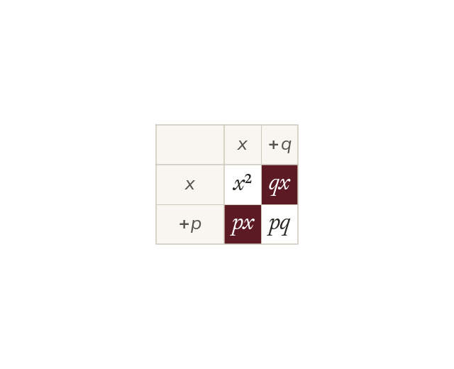

Where the two numbers come from
(x + p)(x + q) expands to x² + (p + q)x + pq. So the two numbers add to b and multiply to c.
Expanding (x + p)(x + q) gives x² + (p + q)x + pq. So in x² + bx + c, the two numbers add to b and multiply to c.